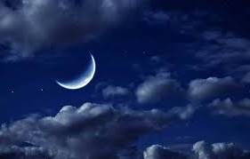

ВСТУП
Космос нескінченний у просторі та в часі. Земля - маленька перлинка великого космосу. На нашій планеті та у навколишньому Всесвіті відбувається багато цікавих явищ. Їх здатна обгрунтувати та науково пояснити освідчена людина. Вивчення цих явищ, їх особливостей та наслідків дає нам, молодим людям, нові знання, вміння та нові можливості.
Саме тому свої напрацювання я представляю у секції
«Твої можливості, людино»
 Сонце та Місяць – найкрасивіші та найяскравіші світила на небосхилі Землі. Я впевнена, що з давніх давен всі люди Землі, які вдивлялися в прекрасне бездонне небо, захоплювалися його красою та намагалися збагнути його таємниці. Яке воно величне, прекрасне і чаруюче.
Мені дуже подобається спокійне зоряне небо з тоненьким серпиком Місяця на його сфері.
Здавна це незвичайне небесне світило привертає увагу людей своєю красою та загадковістю. Місяць з'являється між зорями і освітлює темні ночі, а іноді веде себе незвично – покривається криваво червоною круглою плямою.
Не менше місячних ночей, приваблюють мене ясні сонячні дні. Особливою подією є той час, коли на Сонце насувається чорна кругла пляма. Вона частково, а іноді, в певних місцях, повністю перекриває сонячне світло [1].
Сонце та Місяць – найкрасивіші, найяскравіші та найдивовижніші світила на небосхилі Землі. Вони впливають на землян найсильніше, ніж усіх інших небесних тіл.
Сонячні та місячні затемнення — надзвичайно цікаві явища природи, знайомі людині з давніх часів. Вони відбуваються порівняно часто, але побачити їх можна не з будь-якої точки планети, а тому багатьом здаються рідкісними.
Тому, мета мого проекту:
- Систематизувати вивчений матеріал про вигляд, будову та особливості розташування Сонця та Місяця;
- Про затемнення цих світил, їх види та особливості;
- Спостереження затемнень з сивої давнини і до наших днів;
- Розповісти про моє літнє навчання у Кримській астрономічній обсерваторії в 2010 році;
- Про мої спостереження затемнень Сонця у 2011 та 2015 роках, та найтривалішого за остані 100 років місячного затемнення 27 липня 2018 р.
- Про кривавий блакитний супермісяць, який спостерігали земляни в ніч на 31 січня 2018 р.;
- Про періодичність затемнень та найближчі з них, зручні для спостережень у наших краях;
- Особливості затемнень 2018 та 2019 років.
Реалізація проекту:
- Проект опубліковано у збірнику наукових статей «Астрономія і сьогодення»
- Підготовлену мною презентацію можна використати при вивченні даної теми.
- Для перевірки засвоєння учнями даної теми я підготувала вікторину та відповіді до неї.
-
Підготувала та представила в додатках добірку :
«Цікаві факти про затемнення»
- Працюю над створенням різних видів штучного затемнення Сонця та залученням до цього моїх однодумців.